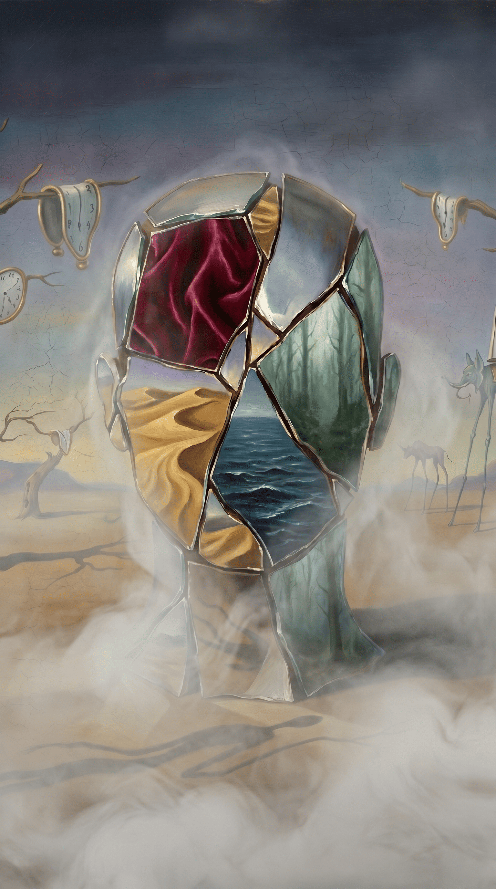
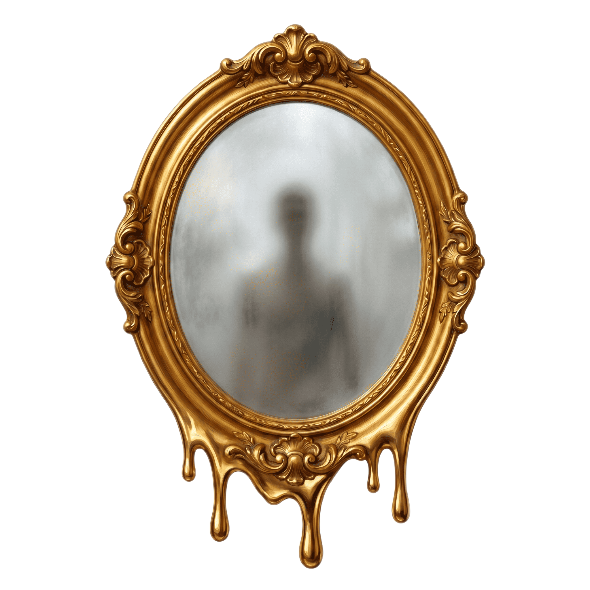

Здравствуй, путник!
Приглашаем тебя заглянуть в своё отражение и узнать, какая стихия преобладает в твоём темпераменте. Мы предлагаем тебе ответить на 16 вопросов и познакомиться с собой поближе — возможно, что-то о себе ты узнаешь впервые.
В природе не существует «чистых» типов, все мы — сложное сплетение разных граней. Поэтому на любой из вопросов ты можешь выбрать один или сразу два варианта ответа. Если передумаешь, свой выбор всегда можно легко поменять.
Будь искренним с собой, и зеркало покажет твою настоящую суть.

ЗАГЛЯНУТЬ В ЗЕРКАЛО

1. Утро. Будильник прозвенел. Твои действия?
А) Встаю сразу, уже думаю что делать ✔
Б) Встаю бодро, настроение хорошее ✔
В) Встаю медленно, нужно время раскачаться ✔
Г) Лежу, думаю о делах, немного тревожно ✔

2. На работе/учёбе дали срочное задание. Реакция?
А) Азарт, сразу берусь ✔
Б) Окей, разберёмся, не паникую ✔
В) Вздыхаю, но методично делаю ✔
Г) Паникую, трудно сосредоточиться ✔

3. Как ты принимаешь решения?
А) Быстро, по интуиции, потом разберёмся ✔
Б) Быстро, но взвешиваю варианты ✔
В) Медленно, обдумываю всё тщательно ✔
Г) Долго, боюсь ошибиться ✔

4. Вечеринка с незнакомыми людьми. Ты?
А) В центре внимания, знакомлюсь со всеми ✔
Б) Общаюсь легко, нахожу интересных людей ✔
В) Пару разговоров и мне достаточно ✔
Г) Некомфортно, держусь в стороне ✔

5. Тебя критикуют публично. Ты?
А) Отвечаю резко, защищаюсь ✔
Б) Не принимаю близко к сердцу, отшучиваюсь ✔
В) Молча принимаю, обдумываю потом ✔
Г) Очень больно, долго переживаю ✔

6. Твой рабочий стол / пространство?
А) Хаос, но я знаю где что лежит ✔
Б) Постоянно меняется ✔
В) Всё на своих местах, система ✔
Г) Чисто, но есть личные вещи ✔

7. Как ты отдыхаешь после тяжёлого дня?
А) Спорт, физическая активность ✔
Б) Встреча с друзьями, общение ✔
В) Тихо дома, книга или сериал ✔
Г) Одиночество, музыка, творчество ✔

8. Тебе скучно. Что делаешь?
А) Нахожу активность немедленно ✔
Б) Звоню кому-нибудь ✔
В) Займусь чем-нибудь спокойно ✔
Г) Ухожу в мысли, фантазии ✔

9. Конфликт с близким человеком. Ты?
А) Говорю сразу и прямо ✔
Б) Пытаюсь найти компромисс ✔
В) Замалчиваю, потом спокойно говорю ✔
Г) Очень переживаю внутри ✔

10. Как ты относишься к планированию?
А) Действую по ситуации ✔
Б) План есть, но гибко меняю ✔
В) Чёткий план, расписание ✔
Г) Планирую, но тревожусь ✔

11. Твой темп жизни?
А) Быстро, динамично ✔
Б) Активно, но без фанатизма ✔
В) Размеренно, стабильно ✔
Г) Хочу спокойствия ✔

12. Спорт и физическая активность?
А) Выброс энергии, интенсив ✔
Б) Удовольствие в компании ✔
В) Одиночные практики, йога ✔
Г) Не моё ✔

13. Чувства после скопления людей?
А) Заряжен, хочу ещё ✔
Б) Хорошо, немного устал ✔
В) Устал, нужно побыть одному ✔
Г) Сильно вымотан ✔

14. Друзья попросили помочь срочно?
А) Бросаю всё и лечу ✔
Б) Сначала уточню детали ✔
В) Если не нарушает планы ✔
Г) Помогу, но внутри будет тяжело ✔

15. Перемены в жизни?
А) Обожаю перемены ✔
Б) Воспринимаю легко ✔
В) Нужно время привыкнуть ✔
Г) Пугают, лучше стабильность ✔

16. Что про тебя говорят люди?
А) Импульсивный ✔
Б) Душа компании ✔
В) Надёжный ✔
Г) Слишком много думаешь ✔
СОБИРАЕМ ГРАНИ ТВОЕГО ОТРАЖЕНИЯ
ОСТАВИТЬ ОТЗЫВ
Спасибо за твой отзыв! ✨
Расскажи, как тебе тест — это поможет нам стать лучше! 🙏
Осталось: 150
Очень атмосферно! Не ожидала, что результат настолько точно опишет мое состояние сейчас. Картинки просто супер.
Тест заставил остановиться и немного подумать. Спасибо за этот приятный опыт, дизайн на высоте.
Я перепроходила два раза, потому что первый раз отвечала не совсем честно. Второе отражение — 100% я.
Быстро, динамично, ничего лишнего. С результатами согласен полностью! Буду скидывать друзьям.
НАЗАД